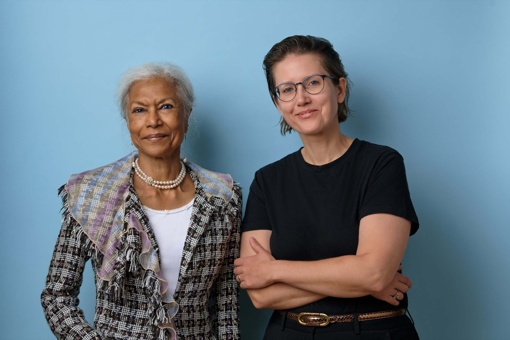

Women-specific conditions
May Health
Developing technology to restore ovulation in women with PCOS.
Sofinnova, Bpifrance, Trill Impact
Now Raising Fund II
We back early-stage healthcare businesses addressing unmet needs in women’s health — with attention to the science, the people and the path to market.
Specialist focus · Clinical rigor · Cross-border access

Selected investments
Our portfolio reflects three investment lenses: conditions unique to women, markets serving predominantly women, and healthcare solutions with a distinct rationale for female patients.
Women-specific conditions
Developing technology to restore ovulation in women with PCOS.
Sofinnova, Bpifrance, Trill Impact
Women-specific conditions
Developing a self-retaining surgical retractor designed for C-sections.
EQT Life Sciences, TX Medical Center
Women-specific conditions

Developing LIONESS™, a device designed to help prevent preterm birth by supporting the cervix.
Tri Ventures
Women-predominant markets
Beyond Medicine focuses on skin longevity and mitochondrial health. Its flagship brand, RebelCell, applies mitochondrial science to skincare designed to support recovery after aesthetic procedures.
Collaborations: longevity clinics, Switzerland
Differentiated care for women

A novel chemotherapy port designed with female patients in mind, combining simplified placement with attention to their aesthetic concerns.
MedVenture Health
Differentiated care for women

RenalGuard is designed to reduce acute kidney injury around cardiac procedures, with a randomized cardiac-surgery study demonstrating lower AKI rates. Sex-related differences in kidney risk and its assessment make female patients an important part of Kidron’s investment rationale.
Abiomed (J&J)